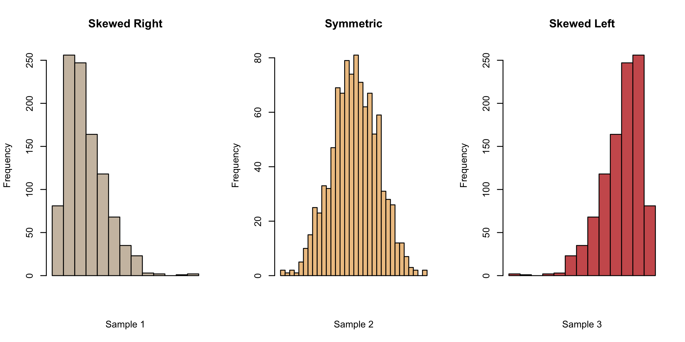
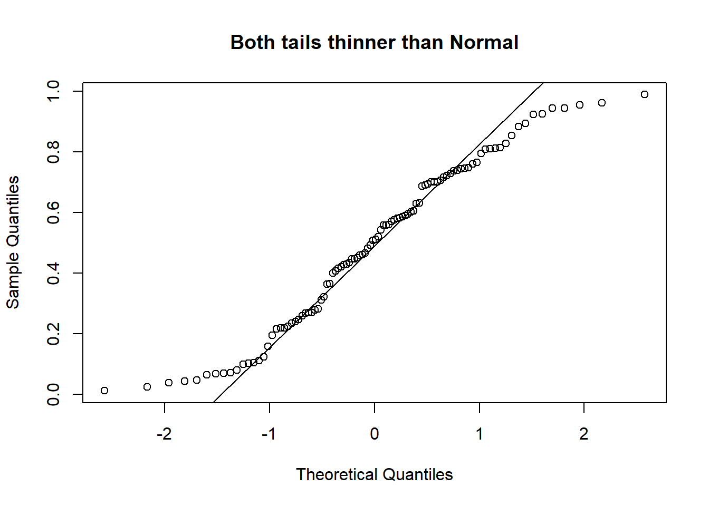
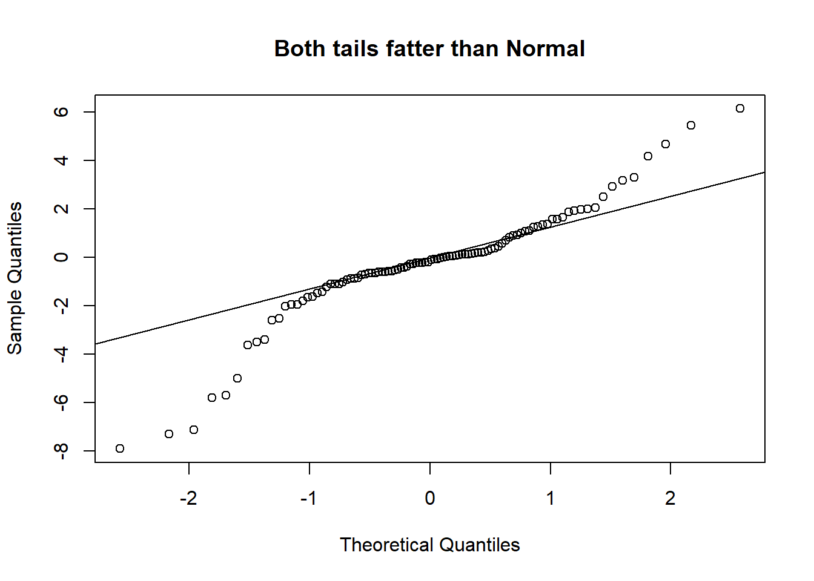
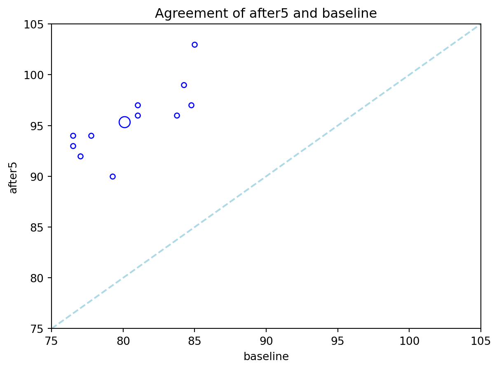
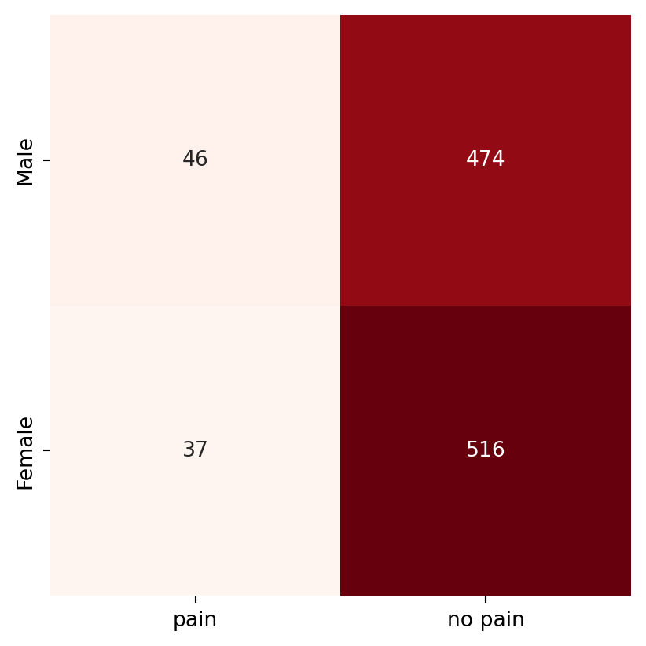
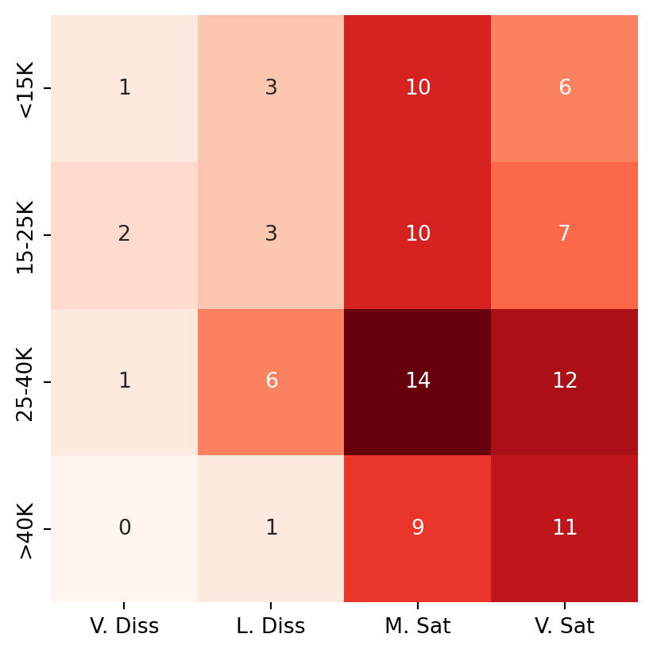

2 Statistical Inference
2.1 Introduction
In statistics, we often wish to make inference about a population, using a sample. The sample typically has uncertainty associated with it, because the precise values will differ each time we draw a sample from the population. The process of utilising the observations from the sample to make conclusions regarding population characteristics, is known as statistical inference. This topic introduces two main techniques for statistical inference in common application contexts. The two techniques are (1) hypothesis tests and (2) confidence intervals.
Hypothesis Tests
You might have been introduced to hypothesis tests in an introductory course before, but just to get us all on the same page, here is the general approach for conducting a hypothesis test:
Step 1: Assumptions
In this step, we make a note of the assumptions required for the test to be valid. In some tests, this step is carried out last, but, it is nonetheless essential to perform as it could invalidate the test. Some tests are very sensitive to the assumptions - this is in fact the main reason that the class of robust statistics was invented.
Step 2: State the hypotheses and significance level
The purpose of hypothesis testing is to make an inferential statement about the population from which the data arose. This inferential statement is what we refer to as the hypothesis regarding the population.
The hypotheses will be stated as a pair: The first hypothesis is the null hypothesis \(H_0\) and the second is the alternative hypothesis \(H_1\). Both statements will involve the population parameter (not the data summary) of interest. For example, if we have a sample of observations from two groups \(A\) and \(B\), and we wish to assess if the mean of the populations is different, the hypotheses would be
\[\begin{eqnarray} H_0: & \mu_A = \mu_B \\ H_1: & \mu_A \ne \mu_B \end{eqnarray}\]
\(H_0\) is usually a statement that indicates “no difference”, and \(H_1\) is the complement of \(H_0\), or a subset of it.
At this stage, it is also crucial to state the significance level of the test. The significance level corresponds to the Type I error of the test - the probability of rejecting \(H_0\) when in fact it was true. This level is usually denoted as \(\alpha\), and is usually taken to be 5%, but there is no reason to adopt this blindly. Where possible, the significance level should be chosen to be appropriate for the problem at hand.
Think of the choice of 5% as corresponding to accepting an error at a rate of 1 in 20 - that’s how it was originally decided upon by R A Fisher.
Step 3: Compute the test statistic
The test statistic is usually a measure of how far the observed data deviates from the scenario defined by \(H_0\). Usually, the larger it is, the more evidence we have against \(H_0\). The construction of a hypothesis test (by theoretical statisticians) involves the derivation of the exact or approximate distribution of the test statistic under \(H_0\). Deviations from the assumption could render this distribution incorrect.
Step 4: Compute the \(p\)-value
The \(p\)-value quantifies the chance of occurrence of a dataset as extreme as the one observed, under the assumptions of \(H_0\). The distribution of the test statistic under \(H_0\) is used to compute this value between 0 and 1. A value closer to 0 indicates stronger evidence against \(H_0\).
Step 5: State your conclusion
This is the binary decision stage - either we reject \(H_0\), or we do not reject \(H_0\). It is conventional to use this terminology (instead of “accepting \(H_1\)”) since our \(p\)-value is a measure of evidence against \(H_0\) (not for it).
Confidence Intervals
Confidence intervals are an alternative method of inference for population parameters. Instead of yielding a binary reject/do-not-reject result, they return an
interval that contains the plausible values for the population parameter. Many confidence intervals are derived by inverting hypothesis tests, and almost all confidence intervals are of the form
Sample estimate \(\pm\) margin of error
For instance, if we observe \(x_1, \ldots, x_n\) from a Normal distribution, and wish to estimate the mean of the distribution, the 95% confidence interval based on the the \(t\) distribution is
\[\begin{equation*} \bar{x} \pm t_{0.025, n-1} \times \frac{s}{\sqrt{n}} \end{equation*}\]
where
- \(\bar{x}\) is the sample mean,
- \(s\) is the sample standard deviation, and
- \(t_{0.025, n-1}\) is the 0.025-quantile from the \(t\) distribution with \(n-1\) degrees of freedom.
The formulas for many confidence intervals rely on asymptotic Normality of the estimator. However, this is an assumption that can be overcome with the technique of bootstrapping. If time permits, we shall touch on this in a later topic of our course. Bootstrapping can also be used to sidestep the distributional assumptions in hypothesis tests, but I still much prefer confidence intervals to tests because they yield an interval; they provide much more information than a binary outcome.
2.2 Comparing Means
2-sample Tests
In an independent samples \(t\)-test, observations in one group yield no information about the observations in the other group. Independent samples can arise in a few ways:
- In an experimental study, study units could be assigned randomly to different treatments, thus forming the two groups.
- In an observational study, we could draw a random sample from the population, and then record an explanatory categorical variable on each unit, such as the gender or senior-citizen status.
- In an observational study, we could draw a random sample from a group (say smokers), and then a random sample from another group (say non-smokers). This would result in a situation where the independent 2-sample \(t\)-test is appropriate.
Formal Set-up
Formally speaking, this is how the independent 2-sample t-test works:
Suppose that \(X_1,X_2,\ldots,X_{n_1}\) are independent observations from group 1, and \(Y_1, \ldots Y_{n_2}\) are independent observations from group 2. It is assumed that
\[\begin{eqnarray} X_i &\sim& N(\mu_1,\, \sigma^2),\; i=1,\ldots,n_1 \\ Y_j &\sim& N(\mu_2,\, \sigma^2),\; j=1,\ldots,n_2 \end{eqnarray}\]
The null and alternative hypotheses would be
\[\begin{eqnarray} H_0: & \mu_1 = \mu_2 \\ H_1: & \mu_1 \ne \mu_2 \end{eqnarray}\]
The test statistic for this test is:
\[ T_1 = \frac{(\bar{X} - \bar{Y}) - 0 }{s_p\sqrt{1/n_1 + 1/n_2} } \]
where
\[\begin{equation*} s^2_p = \frac{(n_1 - 1)s_1^2 + (n_2 - 1) s_2^2}{n_1 + n_2 -2 } \end{equation*}\]
Notice that the numerator of \(T_1\) will be large (in absolute value) when the difference in sample group means is also large. This is what we mean when we say that the test-statistic measures deviation from the null hypothesis.
Under \(H_0\), the test statistic \(T_1\) follows a \(t\)-distribution with \(n_1 + n_2 -2\) degrees of freedom. When we use a software to apply the test above, it will typically also return a confidence interval, computed as
\[\begin{equation*} (\bar{X} - \bar{Y}) \pm t_{n_1 + n_2 -2, 1 - \alpha/2} \times s_p\sqrt{1/n_1 + 1/n_2} \end{equation*}\]
For more details on the test, refer to the links in the references section Section 2.7.
Example 2.1 (Example: Abalone Measurements)
The dataset on abalone measurements from the UCI machine learning repository contains measurements of physical characteristics, along with the gender status. We derive a sample of 50 measurements of male and female abalone records for use here. Our goal is to study if there is a significant difference between the viscera weight between males and females. The derived dataset can be found on Canvas.
| gender | viscera |
|---|---|
| Loading ITables v2.3.0 from the internet... (need help?) |
print(f"The $p$-value for the test is {t_out.pvalue:.3f}.")#
print(f"The actual value of the test statistic is {t_out.statistic:.3f}.")
print(f"The upper and lower limits of the CI are ({ci_95[0]:.3f}, {ci_95[1]:.3f}).")The $p$-value for the test is 0.365.
The actual value of the test statistic is 0.910.
The upper and lower limits of the CI are (-0.023, 0.063).To assess the normality assumption, we make histograms and qq-plots. Histograms of data from a Normal distribution should appear symmetric and bell-shaped. The tails on both sides should come down at a moderate pace. If we observe asymmetry in our histogram, we might suspect deviation from Normality. As we can see from the figure below, a histogram with a long tail on the right (left) is referred to as right-skewed (corr. left-skewed).

Example 2.2 (Example: Abalone Measurements)
Now we turn back to the histograms for the abalone data. Indeed, they do indicate some deviation from Normality - the female group is a little skewed to the right, while the male group appears to have a sharper peak than a Normal.
A Quantile-Quantile plot is a graphical diagnostic tool for assessing if a dataset follows a particular distribution. Most of the time we would be interested in comparing against a Normal distribution.
A QQ-plot plots the standardized sample quantiles against the theoretical quantiles of a N(0; 1) distribution. If they fall on a straight line, then we would say that there is evidence that the data came from a normal distribution. Especially for unimodal datasets, the points in the middle will fall close to the line. The value of a QQ-plot is in judging if the tails of the data are fatter or thinner than the tails of the Normal.


Example 2.3 (Example: Abalone Measurements)
If we compare the qq-plots from the data (below) with the reference (above), we can infer that for females, the left tail is thinner than a Normal - it abruptly cuts off. For males, both the left and the right tail are fatter than a Normal’s.
If you are keen on learning about particular hypothesis tests for Normality, take a look at the references Section 2.7.
We also need to assess if the variances are equal. While there are many hypothesis tests specifically for assessing if variances are equal (e.g. Levene, Bartlett), in our class, I advocate a simple rule of thumb. If the larger s.d is more than twice the smaller one, than we should not use the equal variance form of the test. This rule of thumb is widely used in practice (see the references Section 2.7).
| viscera | ||||||||
|---|---|---|---|---|---|---|---|---|
| count | mean | std | min | 25% | 50% | 75% | max | |
| gender | ||||||||
| F | 50.0 | 0.28241 | 0.108707 | 0.095 | 0.201250 | 0.275 | 0.365125 | 0.575 |
| M | 50.0 | 0.30220 | 0.108746 | 0.040 | 0.253125 | 0.310 | 0.348750 | 0.638 |
We would conclude that there is no significant difference between the mean viscera weight of males and females.
2.3 Paired Sample Tests
The data in a paired sample test also arises from two groups, but the two groups are not independent. A very common scenario that gives rise to this test is when the same subject receives both treatments. His/her measurement under each treatment gives rise to a measurement in each group. However, the measurements are no longer independent.
Example 2.4 (Example: Reaction time of drivers)
Consider a study on 32 drivers sampled from a driving school. Each driver is put in a simulation of a driving situation, where a target flashes red and green at random periods. Whenever the driver sees red, he/she has to press a brake button.
For each driver, the study is carried out twice - at one of the repetitions, the individual carries on a phone conversation while at the other, the driver listens to the radio. Each measurement falls under one of two groups - “phone” or “radio”, but the measurements for driver \(i\) are clearly related.
Some people might just have a slower/faster baseline reaction time!
This is a situation where a paired sample test is appropriate, not an independent sample test.
Formal Set-up
Suppose that we observe \(X_1, \ldots , X_n\) independent observations from group 1 and \(Y_1, \ldots, Y_n\) independent observations from group 2. However the pair \((X_i, Y_i)\) are correlated. Similar to the previous section, it is assumed that
\[\begin{eqnarray} X_i &\sim& N(\mu_1,\, \sigma_1^2),\; i=1,\ldots,n \\ Y_j &\sim& N(\mu_2,\, \sigma_2^2),\; j=1,\ldots,n \end{eqnarray}\]
We let \(D_i = X_i - Y_i\) for \(i=1, \ldots, n\). It follows that \[ D_i \sim N(\mu_1 - \mu_2,\; \sigma^2_1 + \sigma^2_2 - 2 cov(X_i, Y_i)) \] The null and alternative hypotheses are stated in terms of the distribution of \(D_i\):
\[\begin{eqnarray*} H_0: & \mu_D = 0 \\ H_1: & \mu_D \ne 0 \end{eqnarray*}\]
The test statistic for this test is:
\[ T_2 = \frac{\bar{D} - 0 }{s / \sqrt{n} } \] where \[ s^2 = \frac{\sum_{i=1}^n (D_i - \bar{D})^2}{(n - 1)} \]
Under \(H_0\), the test statistic \(T_2 \sim t_{n - 1}\). When we use a software to apply the test above, it will typically also return a confidence interval, computed as
\[ \bar{D} \pm t_{n - 1, 1 - \alpha/2} \times s / \sqrt{n} \]
Example 2.5 (Example: Heart Rate Before/After Treadmill)
The following dataset comes from a textbook. In a self-recorded experiment, an individual recorded his heart rate before using a treadmill (baseline) and 5 minutes after use, for 12 days in 2006.
hr_df = pd.read_csv("data/health_promo_hr.csv")
#hr_df.head()
p_test_out = stats.ttest_rel(hr_df.baseline, hr_df.after5)
print(f"The $p$-value for the test is {p_test_out.pvalue:.2g}.")
print(f"""
The difference in means is {hr_df.baseline.mean() - hr_df.after5.mean():.3f}.
""")The $p$-value for the test is 2.2e-10.
The difference in means is -15.229.
While we do not include them here, it is imperative to also make the checks for Normality. If you were to make them, you would realise that the sample size is rather small. Even so, it is difficult to make the case for Normality here.
Here is a plot that is particularly useful in paired sample studies:
ax1 = hr_df.plot(x='baseline', y='after5',kind='scatter', marker='o',
edgecolor='blue', color='none')
group_means = hr_df.loc[:, ['baseline', 'after5']].mean(axis=0)
ax1.set_xlim(75, 105)
ax1.set_ylim(75,105)
ax1.plot([75,105], [75,105], color="lightblue", linestyle="dashed");
ax1.scatter(group_means.iloc[0], group_means.iloc[1], marker='o',
edgecolor='blue', color='none', s=100);
ax1.set_title('Agreement of after5 and baseline');
2.4 ANoVA
In this section, we introduce the one-way analysis of variance (ANOVA), which generalises the \(t\)-test methodology to more than 2 groups. Hypothesis tests in the ANOVA framework require the assumption of Normality.
While the \(F\)-test in ANOVA provides a determination of whether or not the group means are different, in practice, we would always want to follow up with specific comparisons between groups as well.
Example 2.6 (Example: Heifers)
The following example was taken from Introduction to Statistical Data Analysis for Life Sciences.
An experiment with dung from heifers was carried out in order to explore the influence of antibiotics on the decomposition of dung organic material. As part of the experiment, 36 heifers were randomly assigned into six groups. Note that a heifer is a young, female cow that has not had her first calf yet.
Antibiotics of different types were added to the feed for heifers in five of the groups. The remaining group served as a control group. For each heifer, a bag of dung was dug into the soil, and after 8 weeks the amount of organic material was measured for each bag.
Here is a boxplot of the data from each group, along with summary statistics in a table below.
Compared to the control group, it does appear that the median organic weight of the dung from the other heifer groups is higher. The following table displays the mean, standard deviation, and count from each group:
| org | ||||||||
|---|---|---|---|---|---|---|---|---|
| count | mean | std | min | 25% | 50% | 75% | max | |
| type | ||||||||
| Alfacyp | 6.0 | 2.895000 | 0.116748 | 2.75 | 2.7950 | 2.915 | 2.9900 | 3.02 |
| Control | 6.0 | 2.603333 | 0.118771 | 2.43 | 2.5450 | 2.595 | 2.6825 | 2.76 |
| Enroflox | 6.0 | 2.710000 | 0.161988 | 2.42 | 2.6775 | 2.735 | 2.8075 | 2.88 |
| Fenbenda | 6.0 | 2.833333 | 0.123558 | 2.66 | 2.7675 | 2.850 | 2.8725 | 3.02 |
| Ivermect | 6.0 | 3.001667 | 0.109438 | 2.81 | 2.9625 | 3.045 | 3.0600 | 3.11 |
| Spiramyc | 4.0 | 2.855000 | 0.054467 | 2.80 | 2.8300 | 2.845 | 2.8700 | 2.93 |
Observe that the Spiramycin group only yielded 4 readings instead of 6. Our goal in this topic is to understand a technique for assessing if group means are statistically different from one another. Here are the specific analyses that we shall carry out:
Heifers: Questions of Interest
- Is there any significant difference, at 5% level, between the mean decomposition level of the groups?
- At 5% level, is the mean level for Enrofloxacin different from the control group?
- Pharmacologically speaking, Ivermectin and Fenbendazole are similar to each other. Let us call this sub-group (A). They work differently than Enrofloxacin. At 5% level, is there a significant difference between the mean from sub-group A and Enrofloxacin?
Formal Set-up
Suppose there are \(k\) groups with \(n_i\) observations in the \(i\)-th group. The \(j\)-th observation in the \(i\)-th group will be denoted by \(Y_{ij}\). In the One-Way ANOVA, we assume the following model:
\[\begin{equation} Y_{ij} = \mu + \alpha_i + e_{ij},\; i=1,\ldots,k,\; j=1,\ldots,n_i \end{equation}\]
- \(\mu\) is a constant, representing the underlying mean of all groups taken together.
- \(\alpha_i\) is a constant specific to the \(i\)-th group. It represents the difference between the mean of the \(i\)-th group and the overall mean.
- \(e_{ij}\) represents random error about the mean \(\mu + \alpha_i\) for an individual observation from the \(i\)-th group.
In terms of distributions, we assume that the \(e_{ij}\) are i.i.d from a Normal distribution with mean 0 and variance \(\sigma^2\). This leads to the model for each observation:
\[ Y_{ij} \sim N(\mu + \alpha_i,\; \sigma^2) \]
It is not possible to estimate both \(\mu\) and all the \(k\) different \(\alpha_i\)’s, since we only have \(k\) observed mean values for the \(k\) groups. For identifiability purposes, we need to constrain the parameters. There are two common constraints used, and note that different software have different defaults:
- Setting \(\sum_{i=1}^k \alpha_i = 0\), or
- Setting \(\alpha_1= 0\).
Continuing on from the equation for \(Y_{ij}\), let us denote the mean for the \(i\)-th group as \(\overline{Y_i}\), and the overall mean of all observations as \(\overline{\overline{Y}}\). We can then write the deviation of an individual observation from the overall mean as:
\[ Y_{ij} - \overline{\overline{Y}} = \underbrace{(Y_{ij} - \overline{Y_i})}_{\text{within}} + \underbrace{(\overline{Y_i} - \overline{\overline{Y}})}_{\text{between}} \]
The first term on the right of the above equation is an indication of within-group variability. The second term on the right is an indication of between-group variability. The intuition behind the ANOVA procedure is that if the between-group variability is large and the within-group variability is small, then we have evidence that the group means are different.
If we square both sides of the above equation and sum over all observations, we arrive at the following equation; the essence of ANOVA:
\[ \sum_{i=1}^k \sum_{j=1}^{n_i} \left( Y_{ij} - \overline{\overline{Y}} \right)^2 = \sum_{i=1}^k \sum_{j=1}^{n_i} \left( Y_{ij} - \overline{Y_i} \right)^2 + \sum_{i=1}^k \sum_{j=1}^{n_i} \left( \overline{Y_i} - \overline{\overline{Y}} \right)^2 \]
The squared sums above are referred to as: \[ SS_T = SS_W + SS_B \]
- \(SS_T\): Sum of Squares Total,
- \(SS_W\): Sum of Squares Within, and
- \(SS_B\): Sum of Squares Between.
In addition the following definitions are important for understanding the ANOVA output:
- The Between Mean Square: \[ MS_B = \frac{SS_B}{k-1} \]
- The Within Mean Square: \[ MS_W = \frac{SS_W}{n - k} \]
The mean squares are estimates of the variability between and within groups. The ratio of these quantities is the test statistic.
\(F\)-Test in One-Way ANOVA
The null and alternative hypotheses are:
\[\begin{eqnarray*} H_0 &:& \alpha_i = 0 \text{ for all } i \\ H_1 &:& \alpha_i \ne 0 \text{ for at least one } i \end{eqnarray*}\]
The test statistic is given by \[ F = \frac{MS_B}{MS_W} \]
Under \(H_0\), the statistic \(F\) follows an \(F\) distribution with \(k-1\) and \(n-k\) degrees of freedom.
Assumptions
These are the assumptions that will need to be validated.
- The observations are independent of each other. This is usually a characteristic of the design of the experiment, and is not something we can always check from the data.
- The errors are Normally distributed. Residuals can be calculated as follows: \[ Y_{ij} - \overline{Y_i} \] The distribution of these residuals should be checked for Normality.
- The variance within each group is the same. In ANOVA, the \(MS_W\) is a pooled estimate (across the groups) that is used; in order for this to be valid, the variance within each group should be identical. As in the 2-sample situation, we shall avoid separate hypotheses tests and proceed with the rule-of-thumb that if the ratio of the largest to smallest standard deviation is less than 2, we can proceed with the analysis.
Example 2.7 (Example: Heifers (Cont’d))
Let us now apply the F-test to the heifers dataset.
heifer_lm = ols('org ~ type', data=heifers).fit()
anova_tab = sm.stats.anova_lm(heifer_lm, type=3,)
anova_tab| df | sum_sq | mean_sq | F | PR(>F) | |
|---|---|---|---|---|---|
| type | 5.0 | 0.590824 | 0.118165 | 7.972558 | 0.00009 |
| Residual | 28.0 | 0.415000 | 0.014821 | NaN | NaN |
At the 5% significance level, we reject the null hypothesis to conclude that the group means are significantly different from one another. This answers the first question we set out to.
To extract the estimated parameters, we can use the following code:
| Dep. Variable: | org | R-squared: | 0.587 |
| Model: | OLS | Adj. R-squared: | 0.514 |
| Method: | Least Squares | F-statistic: | 7.973 |
| Date: | Tue, 23 Sep 2025 | Prob (F-statistic): | 8.95e-05 |
| Time: | 09:05:59 | Log-Likelihood: | 26.655 |
| No. Observations: | 34 | AIC: | -41.31 |
| Df Residuals: | 28 | BIC: | -32.15 |
| Df Model: | 5 | ||
| Covariance Type: | nonrobust |
| coef | std err | t | P>|t| | [0.025 | 0.975] | |
| Intercept | 2.8950 | 0.050 | 58.248 | 0.000 | 2.793 | 2.997 |
| type[T.Control] | -0.2917 | 0.070 | -4.150 | 0.000 | -0.436 | -0.148 |
| type[T.Enroflox] | -0.1850 | 0.070 | -2.632 | 0.014 | -0.329 | -0.041 |
| type[T.Fenbenda] | -0.0617 | 0.070 | -0.877 | 0.388 | -0.206 | 0.082 |
| type[T.Ivermect] | 0.1067 | 0.070 | 1.518 | 0.140 | -0.037 | 0.251 |
| type[T.Spiramyc] | -0.0400 | 0.079 | -0.509 | 0.615 | -0.201 | 0.121 |
| Omnibus: | 2.172 | Durbin-Watson: | 2.146 |
| Prob(Omnibus): | 0.338 | Jarque-Bera (JB): | 1.704 |
| Skew: | -0.545 | Prob(JB): | 0.427 |
| Kurtosis: | 2.876 | Cond. No. | 6.71 |
Notes:
[1] Standard Errors assume that the covariance matrix of the errors is correctly specified.
When estimating, Python sets one of the \(\alpha_i\) to be equal to 0. We can tell from the output that the constraint has been placed on the coefficient for Alfacyp (since it is missing).
From the output, we can read off (the Intercept term) that the estimate for Alfacyp is precisely \[
2.895 + 0 = 2.895
\]
To check the assumptions, we can use the following code:
Comparing specific groups
The \(F\)-test in a One-Way ANOVA indicates if all means are equal, but does not provide further insight into which particular groups differ. If we had specified beforehand that we wished to test if two particular groups \(i_1\) and \(i_2\) had different means, we could do so with a t-test. Here are the details to compute a confidence interval in this case:
- Compute the estimate of the difference between the two means: \[ \overline{Y_{i_1}} - \overline{Y_{i_2}} \]
- Compute the standard error of the above estimator: \[ \sqrt{MS_W \left( \frac{1}{n_{i_1}} + \frac{1}{n_{i_2}} \right) } \]
- Compute the \(100(1- \alpha)%\) confidence interval as: \[ \overline{Y_{i_1}} - \overline{Y_{i_2}} \pm t_{n-k, \alpha/2} \times \sqrt{MS_W \left( \frac{1}{n_{i_1}} + \frac{1}{n_{i_2}} \right) } \]
If you notice from the summary statistics output for each group, the rule-of-thumb regarding standard deviations has not been satisfied. The ratio of largest to smallest standard deviations is slightly more than 2. Hence we should not continue with ANOVA; the pooled estimate of the variance may not be valid.
However, we shall proceed with this dataset just to demonstrate the next few techniques, instead of introducing a new dataset.
Example 2.8 (Example: Enrofloxacin vs. Control)
Let us attempt to answer question (2), that we had set out earlier.
est1 = heifer_lm.params.iloc[2] - heifer_lm.params.iloc[1]
MSW = heifer_lm.mse_resid
df = heifer_lm.df_resid
q1 = -stats.t.ppf(0.025, df)
lower_ci = est1 - q1*np.sqrt(MSW * (1/6 + 1/4))
upper_ci = est1 + q1*np.sqrt(MSW * (1/6 + 1/4))
print("The 95% CI for the diff. between Enrofloxacin and control is" +
f"({lower_ci:.3f}, {upper_ci:.3f}).") The 95% CI for the diff. between Enrofloxacin and control is(-0.054, 0.268).As the confidence interval contains the value 0, the binary conclusion would be to not reject the null hypothesis at the 5% level.
Contrast Estimation
A more general comparison, such as the comparison of a collection of \(l_1\) groups with another collection of \(l_2\) groups, is also possible. First, note that a linear contrast is any linear combination of the individual group means such that the linear coefficients add up to 0. In other words, consider \(L\) such that
\[ L = \sum_{i=1}^k c_i \overline{Y_i}, \text{ where } \sum_{i=1}^k c_i = 0 \]
Note that the comparison of two groups in Section 2.4.4 is a special case of this linear contrast.
Here is the procedure for computing confidence intervals for a linear contrast:
- Compute the estimate of the contrast: \[ L = \sum_{i=1}^k c_i \overline{Y_i} \]
- Compute the standard error of the above estimator: \[ \sqrt{MS_W \sum_{i=1}^k \frac{c_i^2}{n_i} } \]
- Compute the \(100(1- \alpha)%\) confidence interval as: \[ L \pm t_{n-k, \alpha/2} \times \sqrt{MS_W \sum_{i=1}^k \frac{c_i^2}{n_i} } \]
Example 2.9 (Example: Enrofloxacin vs. Control)
As we mentioned earliers, let sub-group 1 consist of Ivermectin and Fenbendazole. Here is how we can compute a confidence interval for the difference between this sub-group, and Enrofloxacin.
c1 = np.array([-1, 0.5, 0.5])
n_vals = np.array([6, 6, 6,])
L = np.sum(c1 * heifer_lm.params.iloc[2:5])
MSW = heifer_lm.mse_resid
df = heifer_lm.df_resid
q1 = -stats.t.ppf(0.025, df)
se1 = np.sqrt(MSW*np.sum(c1**2 / n_vals))
lower_ci = L - q1*se1
upper_ci = L + q1*se1
print("The 95% CI for the diff. between the two groups is " +
f"({lower_ci:.3f}, {upper_ci:.3f}).") The 95% CI for the diff. between the two groups is (0.083, 0.332).Multiple Comparisons
The procedures in the previous two subsections correspond to contrasts that we had specified before collecting or studying the data. If, instead, we wished to perform particular comparisons after studying the group means, or if we wish to compute all pairwise contrasts, then we need to adjust for the fact that we are conducting multiple tests. If we do not do so, the chance of making at least one false positive increases greatly.
Bonferroni
The simplest method for correcting for multiple comparisons is to use the Bonferroni correction. Suppose we wish to perform \(m\) pairwise comparisons, either as a test or by computing confidence intervals. If we wish to maintain the significance level of each test at \(\alpha\), then we should perform each of the \(m\) tests/confidence intervals at \(\alpha/m\).
TukeyHSD
This procedure is known as Tukey’s Honestly Significant Difference. It is designed to construct confidence intervals for all pairwise comparisons. For the same \(\alpha\)-level, Tukey’s HSD method provides shorter confidence intervals than a Bonferroni correction for all pairwise comparisons.
2.5 Categorical Variables
There are two sub-types of categorical variables:
- A categorical variable is ordinal if the observations can be ordered, but do not have specific quantitative values.
- A categorical variable is nominal if the observations can be classified into categories, but the categories have no specific ordering.
In this topic, we shall discuss techniques for identifying the presence, and for measuring the strength, of the association between two categorical variables.
Example 2.11 (Example: Chest Pain and Gender)
Suppose that 1073 NUH patients who were at high risk for cardiovascular disease (CVD) were randomly sampled. They were then queried on two things:
- Had they experienced the onset of severe chest pain in the preceding 6 months? (yes/no)
- What was their gender? (male/female)
The data would probably be summarised and presented in this format, which is known as a contingency table.
chest_array = np.array([[46, 474], [37, 516]])
#print(chest_array)
sns.heatmap(chest_array, annot=True, square=True, fmt='',
xticklabels=['pain', 'no pain'],
yticklabels=['Male', 'Female'],
cmap='Reds', cbar=False, );
In the above table, the rows correspond to gender (Male, followed by Female) and the columns correspond to chest pain (from left to right: presence, then absence). Hence 516 of the 1073 patients were females who did not experience chest pain.
In a contingency table, each observation from the dataset falls in exactly one of the cells. The sum of all entries in the cells equals the number of independent observations in the dataset. All the techniques we shall touch upon in this chapter are applicable to contingency tables.
\(\chi^2\)-Test for Independence
In the contingency table above, the two categorical variables are Gender and Presence/absence of Pain. With contingency tables, the main inferential task usually relates to assessing the association between the two categorical variables.
If two categorical variables are independent, then the joint distribution of the variables would be equal to the product of the marginals. If two variables are not independent, we say that they are associated.
The \(\chi^2\)-test uses the definition above to assess if two variables in a contingency table are associated. The null and alternative hypotheses are
\[\begin{eqnarray*} H_0 &:& \text{The two variables are indepdendent.} \\ H_1 &:& \text{The two variables are not indepdendent.} \end{eqnarray*}\]
Under the null hypothesis, we can estimate the joint distribution from the observed marginal counts. Based on this estimated joint distribution, we then compute expected counts (which may not be integers) for each cell. The test statistic essentially compares the deviation of observed cell counts from the expected cell counts.
Example 2.12 (Example: Chest Pain and Gender Expected Counts)
Continuing from the chest pain example, we can compute the estimated marginals using row and column proportions
col_prop,row_prop = sm.stats.Table(chest_array).marginal_probabilities
print(f"The proportion of males in the sample was {col_prop[0]:.3f}.")
print("The proportion of all patients who experienced chest pain " +
f"was {row_prop[0]:.3f}.")The proportion of males in the sample was 0.485.
The proportion of all patients who experienced chest pain was 0.077.If we let \(X\) represent gender and \(Y\) represent chest pain, then we can estimate that:
\[\begin{eqnarray*} \widehat{P}(X = \text{male}) &=& 0.485 \\ \widehat{P}(Y = \text{pain}) &=& 0.077 \end{eqnarray*}\]
Consequently, under \(H_0\) (independence), we would estimate \[ \widehat{P}(X = \text{male},\, Y= \text{pain}) = 0.485 \times 0.077 \approx 0.04 \]
From a sample of size 1073, the expected count for this cell is then
\[ 0.04 \times 1073 = 42.92 \]
Using the approach above, we can derive a general formula for the expected count in each cell: \[ \text{Expected count} = \frac{\text{Row total} \times \text{Column total}}{\text{Total sample size}} \]
The formula for the \(\chi^2\)-test statistic (with continuity correction) is: \[ \chi^2 = \sum \frac{|\text{expected} - \text{observed} |^2}{\text{expected count}} \]
The sum is taken over every cell in the table. Hence in a \(2\times2\) table, as we have here, there would be 4 terms in the summation.
Example 2.13 (Example: Chest Pain and Gender \(\chi^2\) Test)
Let us see how we can apply and interpret the \(\chi^2\)-test for the data in the chest pain example.
chisq_output = stats.chi2_contingency(chest_array, correction=False)
print(f"The p-value is {chisq_output.pvalue:.3f}.")
print(f"The test-statistic value is {chisq_output.statistic:.3f}.")The p-value is 0.187.
The test-statistic value is 1.744.Since the \(p\)-value is 0.1817, we would not reject the null hypothesis at significance level 5%. We do not have sufficient evidence to conclude that the variables are not independent.
To extract the expected cell counts, we can use the following code:
The test statistic in the \(\chi^2\)-test compares the above table to the observed table.
It is only suitable to use the \(\chi^2\)-test when all expected cell counts are larger than 5. If this condition fails, one recommendation is to use a continuity correction, which modifies the test statistic to be
\[ \chi^2 = \sum \frac{(|\text{expected} - \text{observed}| - 0.5)^2}{\text{expected count}} \]
However, I advocate using Fisher’s exact test, which is also a test of independence, but measures deviations under slightly different assumptions. The test uses the exact distribution of the test statistic (not an approximation) so it will apply to small datasets as well.
Measures of Association
Measures of association quantify how two random variables vary together. When both variables are continuous, a common measure that is used is Pearson correlation. We shall return to this in topics such as regression. For now, we touch on bivariate measures of association for contingency tables (two categorical variables).
Odds Ratio
The most generally applicable measure of association, for 2x2 tables with nominal variables, is the Odds Ratio (OR). Suppose we have \(X\) and \(Y\) to be Bernoulli random variables with (population) success probabilities \(p_1\) and \(p_2\).
We define the odds of success for \(X\) to be \[ \frac{p_1}{1-p_1} \] Similarly, the odds of success for random variable \(Y\) is \(\frac{p_2}{1-p_2}\).
In order to measure the strength of their association, we use the odds ratio: \[ \frac{p_1/ (1-p_1)}{p_2/(1-p_2)} \]
The odds ratio can take on any value from 0 to \(\infty\).
- A value of 1 indicates no association between \(X\) and \(Y\). If \(X\) and \(Y\) were independent, this is what we would observe.
- Deviations from 1 indicate stronger association between the variables.
- Note that deviations from 1 are not symmetric. For a given pair of variables, an association of 0.25 or 4 is the same - it is just a matter of which variable we put in the numerator odds.
Due to the above asymmetry, we often use the log-odds-ratio instead: \[ \log \frac{p_1/ (1-p_1)}{p_2/(1-p_2)} \]
- Log-odds-ratios can take values from \(-\infty\) to \(\infty\).
- A value of 0 indicates no association between \(X\) and \(Y\).
- Deviations from 0 indicate stronger association between the variables, and deviations are now symmetric; a log-odds-ratio of -0.2 indicates the same strength as 0.2, just the opposite direction.
To obtain a confidence interval for the odds-ratio, we work with the log-odds ratio and then exponentiate the resulting interval. Here are the steps:
- The sample data in a 2x2 table can be labelled as \(n_{11}, n_{12}, n_{21}, n_{22}\).
- The sample odds ratio is \[ \widehat{OR} = \frac{n_{11} \times n_{22}}{n_{12} \times n_{21}} \]
- For a large sample size, it can be shown that \(\log \widehat{OR}\) follows a Normal distribution. Hence a 95% confidence interval can be obtained through \[ \log \frac{n_{11} \times n_{22}}{n_{12} \times n_{21}} \pm z_{0.025} \times ASE(\log \widehat{OR}) \]
where
- the ASE (Asymptotic Standard Error) of the estimator is \[ \sqrt{\frac{1}{n_{11}} + \frac{1}{n_{12}} + \frac{1}{n_{21}} + \frac{1}{n_{22}}} \]
Example 2.14 (Example: Chest Pain and Gender Odds Ratio)
Let us compute the confidence interval for the odds ratio in the chest pain and gender example from earlier.
For Ordinal Variables
When both variables are ordinal, it is often useful to compute the strength (or lack) of any monotone trend association. It allows us to assess if
As the level of \(X\) increases, responses on \(Y\) tend to increase toward higher levels, or responses on \(Y\) tend to decrease towards lower levels.
For instance, perhaps job satisfaction tends to increase as income does. In this section, we shall discuss a measure for ordinal variables, analogous to Pearson’s correlation for quantitative variables, that describes the degree to which the relationship is monotone. It is based on the idea of a concordant or discordant pair of subjects.
- A pair of subjects is concordant if the subject ranked higher on \(X\) also ranks higher on \(Y\).
- A pair is discordant if the subject ranking higher on \(X\) ranks lower on \(Y\).
- A pair is tied if the subjects have the same classification on \(X\) and/or \(Y\).
If we let
- \(C\): number of concordant pairs in a dataset, and
- \(D\): number of discordant pairs in a dataset.
Then if \(C\) is much larger than \(D\), we would have reason to believe that there is a strong positive association between the two variables. Here are two measures of association based on \(C\) and \(D\):
- Goodman-Kruskal \(\gamma\) is computed as \[ \gamma = \frac{C - D}{C + D} \]
- Kendall \(\tau_b\) is \[ \tau_b = \frac{C - D}{A} \] where \(A\) is a normalising constant that results in a measure that works better with ties, and is less sensitive than \(\gamma\) to the cut-points defining the categories. \(\gamma\) has the advantage that it is more easily interpretable.
For both measures, values close to 0 indicate a very weak trend, while values close to 1 (or -1) indicate a strong positive (negative) association.
Example 2.15 (Example: Job Satisfaction by Income)
Consider the following table, obtained from Agresti (2012). The original data come from a nationwide survey conducted in the US in 1996.
us_svy_tab = np.array([[1, 3, 10, 6],
[2, 3, 10, 7],
[1, 6, 14, 12],
[0, 1, 9, 11]])
col_names = ['V. Diss', 'L. Diss', 'M. Sat', 'V. Sat']
row_names = ['<15K', '15-25K', '25-40K', '>40K']
sns.heatmap(us_svy_tab, annot=True, square=True, fmt='',
xticklabels=col_names,
yticklabels=row_names,
cmap='Reds', cbar=False, );
In measuring the association between these two variables (job satisfaction and income), we are interested in answering questions such as:
If individual A has higher income than individual B, is individual A more likely to be satisfied in his/her job?
\(\gamma\) and \(\tau_b\) are measures that quantify this association. For the function in scipy.stats that computes this association, we need the data in “long format”. Hence we unroll it manually before summoning the method.
SignificanceResult(statistic=0.15235215134659688, pvalue=0.0860294855671433)The output shows that \(\tau_b =0.15\) is positive, and is borderline significant at 5% level. We can conclude that there is a weak association between job satisfaction and income.
2.6 Summary
In this topic, the primary take-aways are the notions of hypothesis tests (HT) and confidence intervals (CI). Both of these approaches aim to uncover information about a population using a sample. I strongly advocate the choice of CI over HT, as the latter option only provides a binary decision. CIs, on the other hand, provide a range of values to provide a better understanding of the situation.
Using a small set of applications, we have demonstrated these techniques. We covered a common scenario where a researcher may need to compare the means between several groups. We then moved onto another common situation, where one might be faced with a contingency table. A common query is: What should we do if the assumptions of the test are not fulfilled? In those circumstances, one possibility is to turn to nonparametric versions of the test. For instance, the Kruskal-Wallis test is a HT for comparing the means of several groups whose distributions are not Normal.
In the section on categorical data, we introduced measures of association for categorical variables - odds ratio, and Kendall \(\tau\). When we have contingency tables, a common choice has been to display barcharts, or heat maps and use those to make decisions on. However, I encourage you to use the measures of association instead. They are intuitive to understand, and can allow you to compare sub-groups or variation of association over time.
With HT and with CI, there has been a tendency to manipulate the data or tests until the desired outcome has been reached. Do be watchful of this. Conducting multiple tests increases the false positive error rate, so please do avoid this as well. If you conduct multiple tests, adjust for multiple testing. Use statitsical inference techniques as a guide together with common sense and domain expertise.
2.7 References
Website References
- Inference recap from Penn State:
- Tests for Normality More information on the Kolmogorov-Smirnov and Shapiro-Wilks Tests for Normality.
- Overview of \(t\)-tests This page includes the rule of thumb about deciding when to use the equal variance test, and when to use the unequal variances version.
Documentation links
- statsmodels ANOVA A more complete example on the application of ANOVA. Return to this when we complete the topic on regression.
- Useful functions from scipy.stats: Under the “Hypothesis Tests” section of this page, you can find:
- Kruskal Wallis - the nonparametric equivalent of ANOVA
- Wilcoxon signed rank - the nonparametric equivalent of paired sample t-test
- Mann Whitney test - the nonparametric equivalent of independent samples t test
- Somer’s D - measure of association for two categorical variables (one ordinal and one nominal).